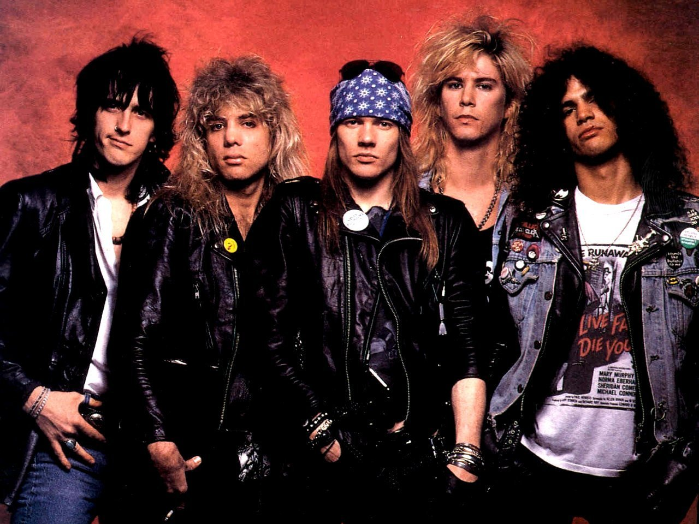
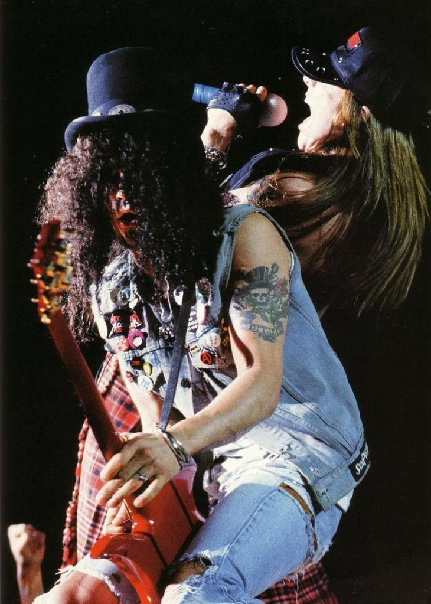
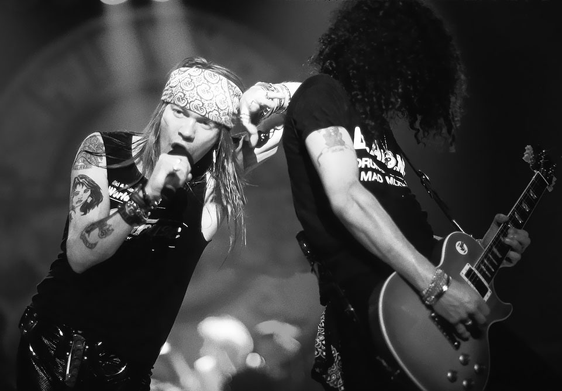
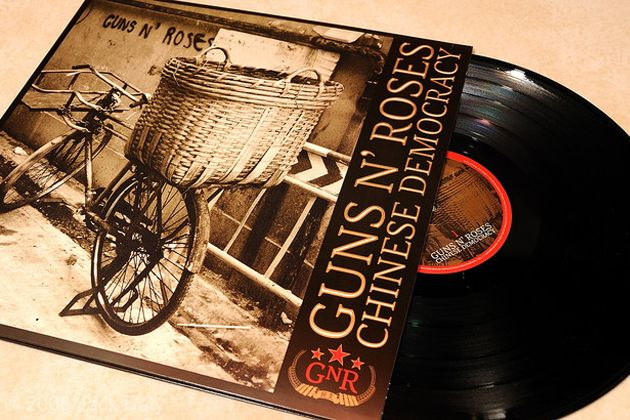
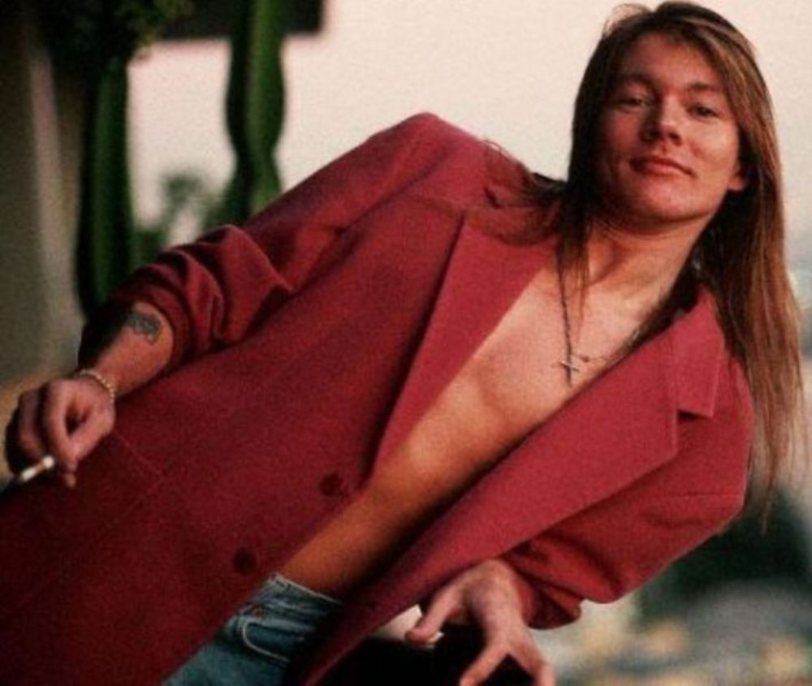
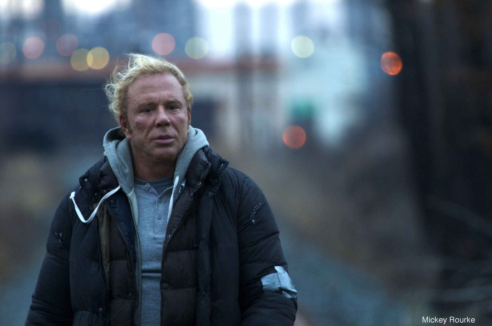
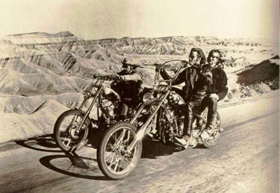

好Riff献给你，让爱传千里 — 第二集 || Guns'N'Roses - Catcher in the Rye
今天讲一点点硬摇。
Glam 也好 Hair 也好，80 年代的 Hard Rock 一直被认为是金属乐进入主流的黄金时期。很多大师级的人马直到今天还活跃在各种大型现场，影响着无数新老乐迷。
（这些乐队 logo 你还认得出多少？）

Guns'N'Roses 当然也是大师，但至于它是否还算「活跃」，恐怕不同的歌迷心中会有着不同的答案—队员之间特别是 Axl Rose 和 Slash 的恩怨情仇分分合合都可以出书了。

（Axl 和 Slash。放在今天，就是一对好 CP）


虽说我常自诩是个 solo 党，但对 Slash 其实没什么感情。反而 Axl 这种年少轻狂、年老顽强而富有人文气息的老浪子才是吸引我持续关注GNR 的动力。
（现在的 Axl）

我一直觉得 Axl 和他的新乐手 Bumblefoot 和 DJ Ashba 也一直承受了很多不应该的压力，总是抬不起头的感觉。所以这次我们不会提已经上了神台的《November Rain》、《Sweet Child O'mine》之类欧美浪漫金曲，而是在「后Slash时代」我心中的一首沧海遗珠—《Chinese Democracy》里的《Catcher in the Rye 麦田守望者》，而且一定要是 2012 年《Live at the Hard Rock Casino, Las Vegas》现场版。

读过《麦》的人应该都记得主人公霍尔顿的放浪形骸，而这简直就是 Axl 前半生的真实写照。但在这首歌里，在沉寂并饱受非议多年之后，Axl 唱的是心中的苦闷，是与世界的格格不入。
When all is said and done
We're not the only ones
Who look at life this way
That's what the old folks say
But every time I'd see them
Makes me wish I had a gun
If I thought that I was crazy
Well I guess I'd have more fun
在我主观的想象里，Axl 心中也一定长住着一个 Peter Pan。

为什么一定要是现场版？
只因为那几句最为动人的「na na na na na na na」（别笑！），Axl 用了真声来唱，再有 Bumblefoot 发挥得极为稳定的 solo加持，让我脑内马上浮现出《摔角手》的结尾一幕，Mickey Rourke（就是钢铁侠用电鞭的那个）在台上的纵身一跃。瞬间热泪盈眶。

《摔角手》中 Mickey 也有一段偶然听到酒吧放 GNR 大为兴奋，继而骂 Nirvana 娘炮的戏。

（年轻时的 Mickey 也是一枚美男子）

虽然英雄不舍离场，但 「The Times They Are a-Changin'」，毫不炫酷的直来直去的硬摇滚又还能停留于时代多久呢？
On an ordinary day
Not in an ordinary way
All at once the song I heard
No longer wouldn't play for anybody
Or anyone that needed comfort from somebody
Needed comfort from someone who cared to be
Not like you
And unlike me
And then voices ran away from me
「Hard Rockers never die, they just fade away.」

现场版试听：《Catcher in the Rye》 《Nightrain》